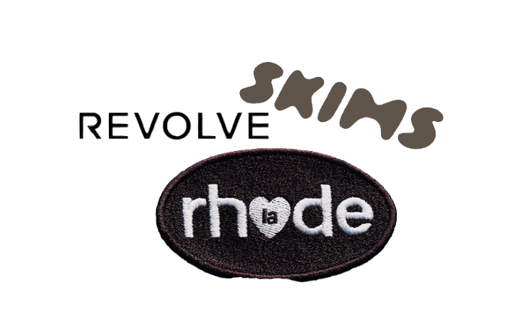

Work with fashion and beauty brands
I want to be part of a creative team for a fashion or beauty company and help design ads, campaigns, and visual content. I like being involved in how a brand looks and feels across different spaces.
In the future I see myself working on art direction, layouts, and campaign ideas for brands that care about style and storytelling. I want my work to feel fresh, confident, and connected to the people it reaches.
